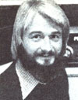

Copthorne Macdonald is the inventor of slow-scan television...a method of amaeur radio tranmission that allows ham operators to both hear and see each other during shortwave broadcasts.
Albert Einstein once said, "A human being is part of the whole called by us universe . . . a part limited in time and space. He experiences himself, his thoughts and feelings as something separated from the rest ... a kind of optical delusion of his consciousness. This delusion is a kind of prison for us, restricting us to our personal desires and to affection for a few persons nearest to us. Our task must be to free ourselves from this prison by widening our circle of compassion to embrace all living creatures and the whole of nature in its beauty."
Einstein could see the unity of all things. For him, that concept was as real as were energy and mass. Others have seen it, too ... artists, saints, sages, and wise ordinary folks. Most of us, however, find it easy to think oneness, but not to feel it deeply enough to let it influence our lives. Yet considering the world situation, I believe we'd better learn to act as if we were all part of a complex fabric ... and do so fast!
But just how can we internalize such a sense of connectedness? The question is a difficult one, and will be among the topics discussed at the eighth annual Human Unity Conference (to be held at the University of British Columbia in Vancouver from July 23 to 26, 1981). Furthermore, the "magic" of ham radio will allow folks not attending to discuss such problems with people at the conference. And I can't think of a more graphic demonstration of connectedness than those thoughts traveling thousands of miles, from one human being to another, on electromagnetic waves!
Howard Silsdorf (WB7AQP) and Rob Southcott (VE7BRS) are coordinating the ham radio activities at the conference. If you'd like to participate, write to Howard at Dept. TMEN, 1215 West Micheltorena, Santa Barbara, California 93103 ... or to Rob at Dept. TMEN, Box 8, 100 Mile House, British Columbia, Canada V0K 2E0. Or you can call Herb Clark (VE7COC), in Vancouver, at 6041922-9259. (The good folks can also be reached through the EARS Net, which meets Tuesday, Thursday, and Saturday evenings on 14325 kHz at 5:45 p.m. Pacific Time.) For more information about the conference itself, write to Human Unity Conference, Dept. TMEN, 5055 Con. naught Drive, Vancouver, British Columbia, Canada V6M 3G2.
THE NDR EAST
While we're on the subject of communications networks, many of you will be glad to hear that we now have a viable East Coast New Directions Net! The enthusiastic "founder members" of the group arewith me-Bob Robinson (K1 PRR) of Yarmouth, Maine ... Bill Hanrahan (KA1KF) of Plymouth, Massachusetts . . . and, a little farther down the coast, Buddy Travis (KA4NNN) of Richmond, Virginia. Each of us can hear the others, the frequency is generally free of interference, and it's a delight to be getting together! The price we pay for our interaction is the loss of a little sleep, as the net meets at 6:00 a.m. Eastern Time each weekday morning, and usually continues until about 7:00 on the clearest frequency between 3898 and 3903. Join us!
OTHER NETS
Several other on-air activities are now well enough established to survive the delay between my writing this and your reading it. Two West Coast nets, for example, are sure to continue. The evening netthe New Directions Roundtable Westmeets Sunday, Tuesday, and Thursday evenings, on 3898 kHz at 8:00 p.m. Pacific Time . . . and also holds a morning gathering each day, on 7166 kHz at 8:30 a.m.
Those folks interested in renewable energy sources will want to check into the Alternate Sources of Energy Net, which meets Sunday afternoons at 2:30 p.m. Eastern Time on 14344 kHz. Enos Schera (W4VPD) handles the net's control station, and he provides a wealth of information on what's happening in this crucial field.
A number of communities continue to make good use of ham radio, too. For instance, hams from Sunrise Ranch in Lovefand, Colorado and its sister community in 100 Mile House, British Columbia meet via the EARS Net ... and radio enthusiasts at The Farm (in Summertown, Tennessee) keep in touch with other "Farm people" around the world on 21332 kHz. (They often operate during the late morning and early afternoon. Interested hams are welcome to check into either-or both-of these nets and get acquainted.)
NDR AUTOCALL
One common way to tune a transmitter, a method that's really quite easy on the rig, Is to send a string of Morse code dots while making final adjustments. Now let's imagine that those signals happen to be accurately timed . . . say at exactly six per second. And let's imagine that each NDR station had a simple 6-Hz detectorialarm circuit hooked up to the station receiver. Then, whenever an NDR station tuned up a frequency, buzzers would sound in distant ham shacks. At that point, any of us with the time and inclination to talk could turn up the volume and see which kindred spirit was on the air!
This, basically, is the "autocall" system that Cliff Buttschardt (W6HDO) and I are testing at the present time. The equipment is simple, too . . . made up of a few inexpensive integrated circuits and parts.
An easy way to generate an accurate 6 dots per second is to divide the 60-Hz powerline frequency by 10, using a decade counter IC ... the counter's output drives a transistor which, in turn, keys the transmitter.
Those hams with electronic keyers have an even simpler option: They can just find the setting on the speed control that produces exactly six dots per second. (If your unit happens to be battery powered, Radio Shack sells a little IC chip and crystal that will let you generate an accurate 60-Hz reference voltage.)
There are a number of detector/alarm circuits that work well on the bench, and one object of the current testing is to compare them and find the very best circuit for on-air use. Cliff has worked up one using the LM2111 chip ... and the old standard 567 chips with parameters chosen for 6-Hz operation work fine, too. (I should mention that while the 6-Hz dot timing must be accurate, the on-air tuning need not be. So long as the transmitter and receiver frequencies are set within 1 kHz of each other, the system will work.)
If you'd like to participate in our on-air tests, drop me a line (or contact me on the air). I'll send you a schematic diagram and parts list, and let you know who's monitoring what frequencies.
Just think, you could be the first on your block equipped with NDR Autocall!
Peace,
Cop Macdonald (VE1 B FL)
P.O. Box 2941
Charlottetown
Prince Edward Island
Canada C1A 8C5
New Directions Radio is an international network of radio amateurs concerned with those ways of using ham radio (and related modes of communicating) that promote our own growth as individuals, and which we perceive as helping to create a more aware, more caring, and more responsible human society. We encourage all who share these interests to work with us. A current schedule of on-the-air activities is included in each issue of the bi-monthly New Directions Roundtable Newsletter, published by Art Mourad (WB2POB) as a service to the rest of us. To subscribe, send 25 cents for each issue desired to Art Mourad, P.O. Box 787, Bergenfield, New Jersey 07621.
|
 |
|
|